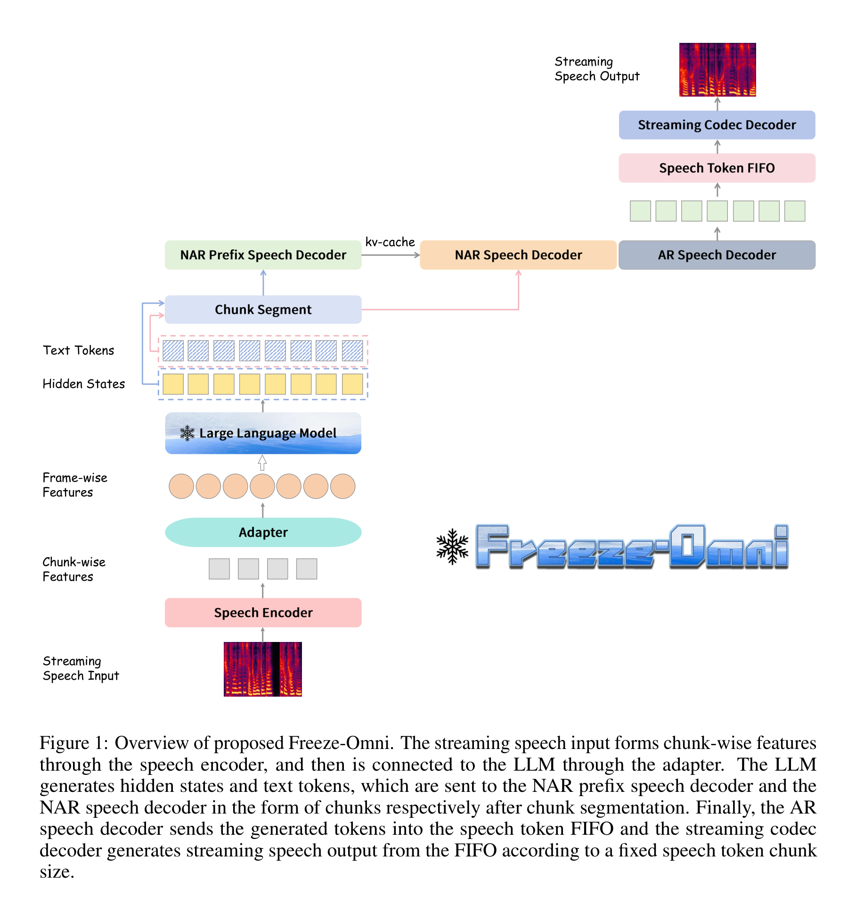

Freeze-Omni A Smart and Low Latency Speech-to-speech Dialogue Model with Frozen LLM
Abstract
The rapid development of large language models has brought many new smart applications, especially the excellent multimodal human-computer interaction in GPT-4o has brought impressive experience to users. In this background, researchers have proposed many multimodal LLMs that can achieve speech-to-speech dialogue recently. In this paper, we propose a speech-text multimodal LLM architecture called Freeze-Omni. Our main contribution is the speech input and output modalities can connected to the LLM while keeping the LLM frozen throughout the training process. We designed 3-stage training strategies both for the modeling of speech input and output, enabling Freeze-Omni to obtain speech-to-speech dialogue ability using text-speech paired data (such as ASR and TTS data) and only 60,000 multi-round text Q&A data on 8 GPUs. Moreover, we can effectively ensure that the intelligence of the Freeze-Omni in the speech modality is at the same level compared with that in the text modality of its backbone LLM, while the end-to-end latency of the spoken response achieves a low level. In addition, we also designed a method to achieve duplex dialogue ability through multi-task training, making Freeze-Omni have a more natural style of dialogue ability between the users. Freeze-Omni mainly provides a possibility for researchers to conduct multimodal LLM under the condition of a frozen LLM, avoiding various impacts caused by the catastrophic forgetting of LLM caused by fewer data and training resources.
Pages
Page 2
Highlights:

Page 3
Highlights:
Several trainable special tokensare added to the input part to guide the LLM in completing the training process at this stage. In thisstage, except for the frozen LLM, the parameters of other networks are all trainable.
Page 5
Highlights:
When the VAD is triggered, the speech stream will sent intoFreeze-Omni chunk by chunk, and an additional classification layer will be added after the last layerof the LLM to predict different states. Three states are defined here, state 0 indicates that the currentLLM can continue to receive speech, and state 1 or 2 indicates that the current chunk is the end ofthe speech. State 1 means that the LLM can interrupt the user and perform the generate stage, andstate 2 means that there is no need to interrupt the user. Both of these states will stop sending speechstreams to Freeze-Omni and reset the VAD module. The Besides, we used a “model as a server” strategy to implement the speech-to-speech dialogue system.First, we started several models simultaneously and regarded them as a server. Then, when a user’sVAD was triggered, the speech would be sent to the server in the form of chunks, and the serverwould be responsible for scheduling which idle model should respond to the current chunk. Sincewe separated all the kv-cache and CNN cache of the speech encoder and LLM during the inferenceprocess, the server only needs to save the inference cache for each user. In this way, any model in theserver could respond to any chunk of any user, and there was no need to specify which model wasused as a monitor or a generator.